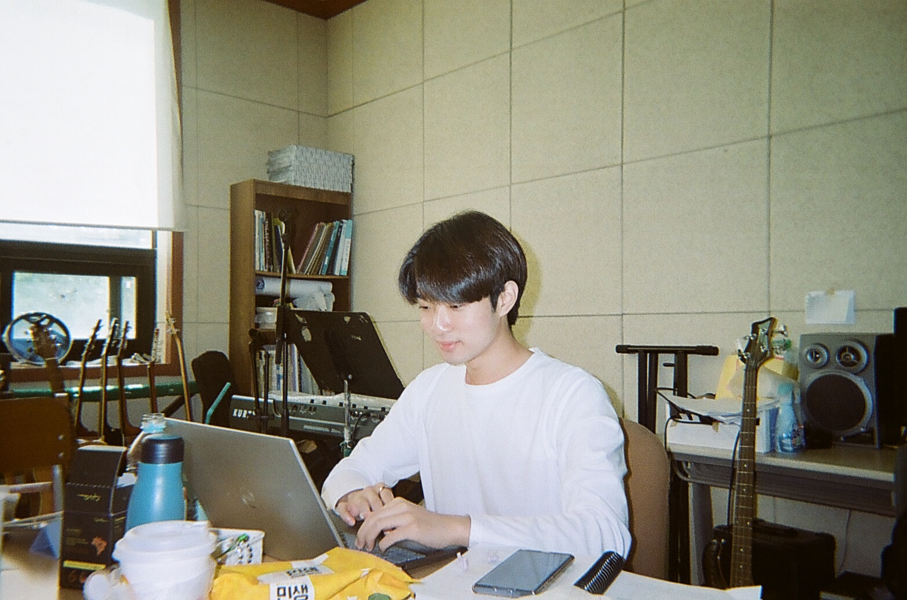
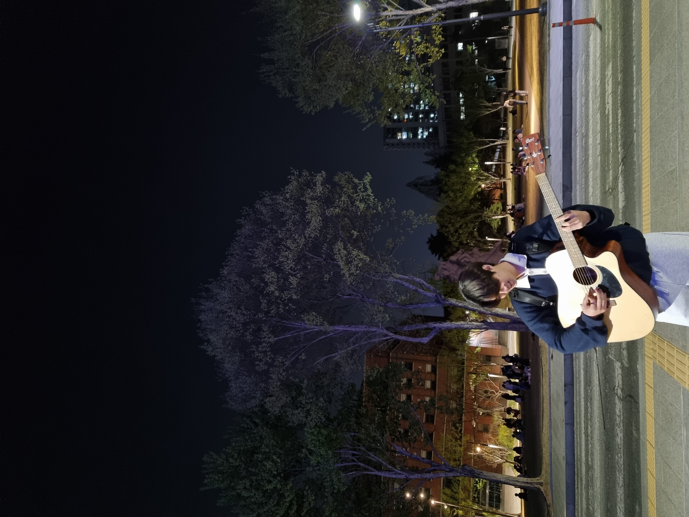
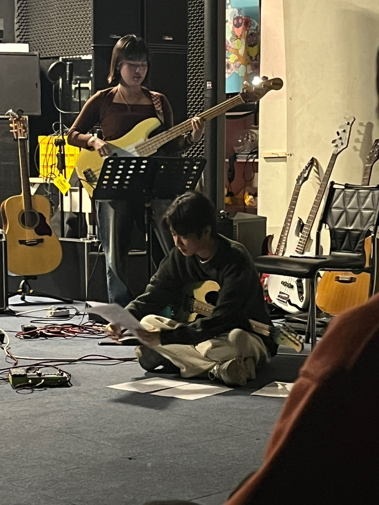
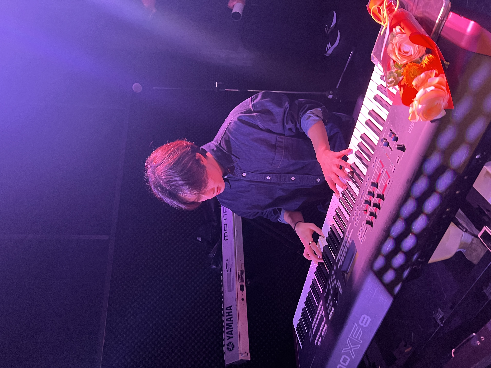
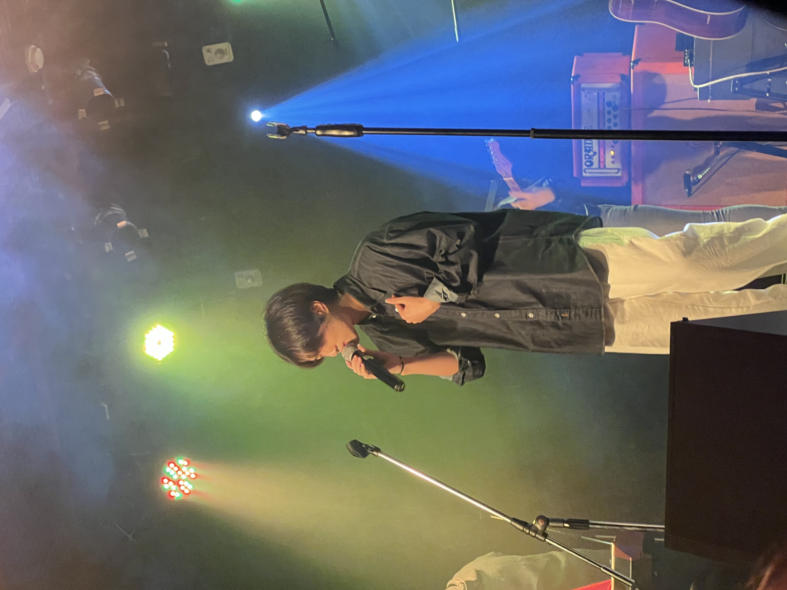
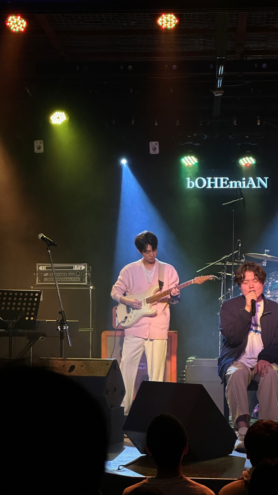
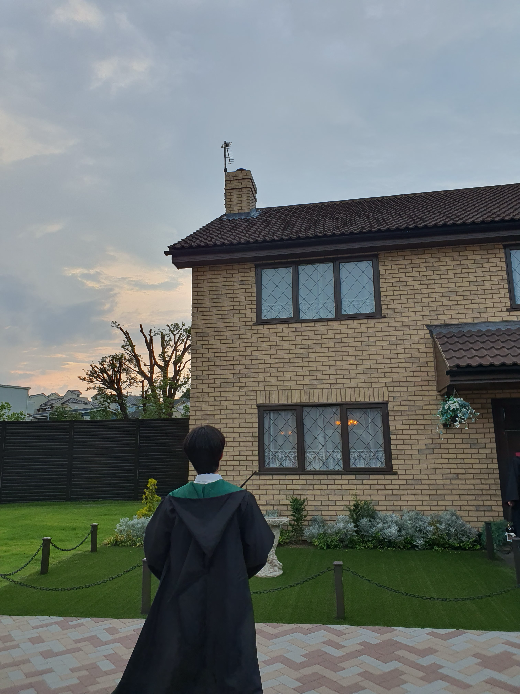
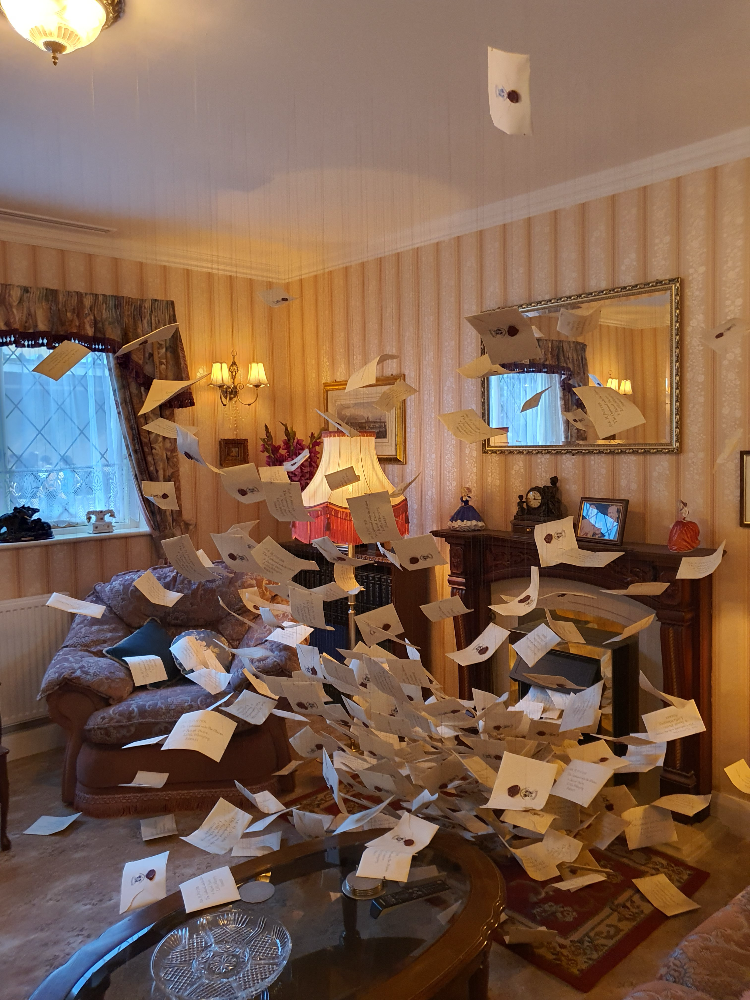
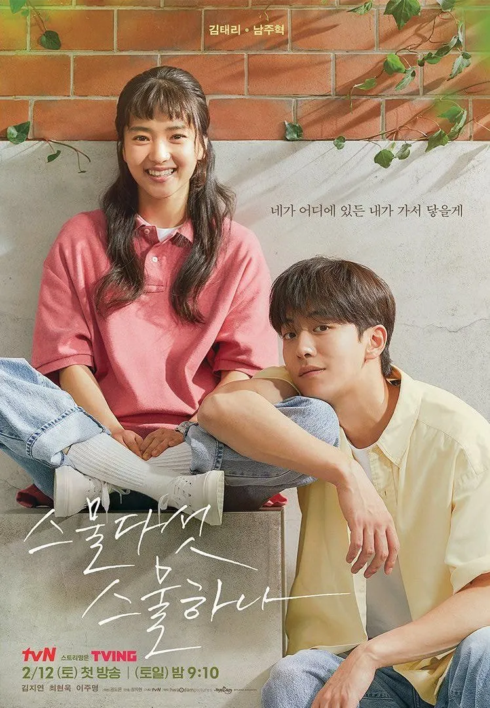

위대한 쇼맨
좋아하는 영화나 드라마는 아껴 보는 편인데, 위대한 쇼맨은 연출과 음악이 너무 좋아서 그 감흥이 쉽게 사라지지 않는 작품입니다. 장면마다 몰입감을 끌어올리는 음악과 무대 같은 연출이 특히 인상적입니다.

오늘의 치열한 삽질이 내일의 레퍼런스가 되기를.
안녕하세요, 학생과 개발자 사이 정콩이입니다.
안녕하세요, 정콩입니다. 보이지 않는 시스템의 흐름을 쫓고, 복잡한 문제를 직관적인 코드로 풀어내는 과정을 기록합니다. 시스템의 낮은 곳에서 일어나는 일들부터 인공지능을 활용한 서비스 구현까지, 기술의 원리를 넓고 깊게 탐구하는 것을 좋아합니다.
단순히 돌아가는 코드를 넘어서, 모든 줄에 분명한 이유와 의도를 담아내는 것을 목표로 합니다. 끊임없이 왜라는 질문을 던지고 그 이면의 동작 방식을 온전히 이해하려 노력합니다.
오늘 마주한 에러와 치열하게 답을 찾아간 흔적들이 누군가에게 유용한 레퍼런스가 되기를 바랍니다. 작업 기록은 GitHub 에 더 자주 남기고 있어요. 맞팔도 언제든 환영합니다.
| 이름 | 유정빈 |
|---|---|
| 닉네임 | 정콩이 |
| MBTI | ENTP |
| 취미 | 기타치기, 운동하기, 현미밥 괴롭히기 |
| 좋아하는 음식 | 고기 |
무대 위에서 가장 뜨거웠던 순간들과 오래 좋아해 온 세계를 함께
담았습니다.
밴드부 공연 6장, 해리포터 스튜디오에서 남긴 기록 3장으로
채운 정콩이의 취향 아카이브입니다.







갤러리 이미지 크게 보기
좋아하는 영화나 드라마는 아껴 보는 편인데, 위대한 쇼맨은 연출과 음악이 너무 좋아서 그 감흥이 쉽게 사라지지 않는 작품입니다. 장면마다 몰입감을 끌어올리는 음악과 무대 같은 연출이 특히 인상적입니다.

대사 하나하나가 오래 남는 작품이라 특히 좋아합니다.
청춘의
감정선을 섬세하게 담아내는 방식이 인상적이었고, 시간이
지나도 자주 떠오르는 문장들이 많았습니다.
오늘 새롭게 배운 것들을 기록합니다.
페이지를 예쁘게 만드는 것보다 먼저 구조를 잘 잡는 일이 중요하다는 걸 다시 확인했다. header, nav, main, section, article처럼 의미를 가진 태그를 쓰면 문서가 훨씬 읽기 쉬워진다.